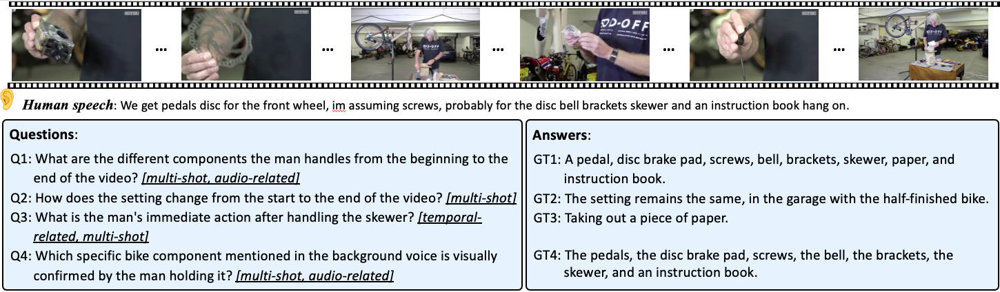
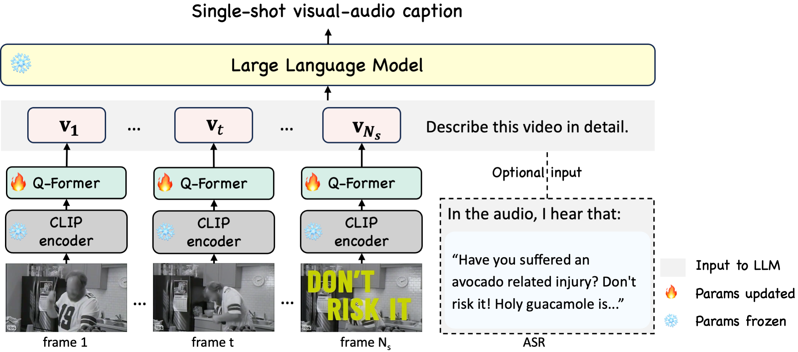

A short clip of video may contain progression of multiple events and an interesting story line. A human need to capture both the event in every shot and associate them together to understand the story behind it.
In this work, we present a new multi-shot video understanding benchmark \dataset with detailed shot-level captions, comprehensive video summaries and question-answering pairs. To facilitate better semantic understanding of videos, we provide captions for both visual signals and human narrations. We design several distinct tasks including single-shot video captioning, multi-shot video summarization, and multi-shot video question answering.
Preliminary experiments show some challenges to generate a long and comprehensive video summary for multi-shot videos. Nevertheless, the generated imperfect summaries can already achieve competitive performance on existing video understanding tasks such as video question-answering, promoting an under-explored setting of video understanding with detailed summaries.
We provide 43K videos with diverse topics and contents. Each video is annotated with shot-level captions and comprehensive video summaries. To facilitate better semantic understanding of videos, we provide captions for both visual signals and human narrations.
The dataset includes 43K multi-shot videos, with an average of 4.4 shots per video, resulting in a total of 188k video shots, each with detailed video caption and narration caption annotations. The average length of our video summaries is 218.3, while the average length of a video is 17.1s. In addition, we annotate another 90K multi-shot videos with GPT-V, to facillate better video-language model training.
Our multi-shot video question-answering benchmark evaluates multi-shot content understanding, temporal ordering, and audio-visual correlation.
For more comprehensive details, please refer to the plots below.
High level comparison of our dataset to previous ones. The summary length of ActivityNet and YouCook2 are their combined length of captions in one video. M and G stands for manual and generated, respectively.
We experiment on tasks like single-shot video captioning, video summarization and video question-answering. Papers and codes are released. We also provide online demos of ChatBot and SumBot. Please have a look at it!
This task involves generating descriptions for individual video shots, where the target description is a concatenation of the visual-only and narration caption for a video shot. This task requires a joint understanding of visual and speech information. Model structure is shown below. Visual tokens from the CLIP visual backbone and Q-Former (together with a linear layer from MiniGPT4), along with text prompts, form the input to the Vicuna.
We experiment VAST with two settings (V+A+S and V+S. V, A and S stand for vision, audio and subtitle respectively), MiniGPT4-C and VideoChat2-C (C stands for captioning). The models are trained on our Shot2Story single-shot video caption data. See the results below.
Multi-shot video summarization is a new task that is distinct from existing video description tasks. It requires the model to understand the shot structure of the given video and to provide a coherently paragraph to describe the progression of events in the different shots.
We propose SUM-shot model, as a powerful baseline for multi-shot video analysis. We sample 4 frames in each video shot and prompting the LLM with frame tokens from different shots, as shown below.

We experiment with different models, such as the Video-ChatGPT, MiniGPT4-SUM-shot, MiniGPT4-holistic (which doesn't have shot information), SUM-shot w/o ASR (which doesn't ASR text as input), and VideoChat2-SUM-shot (equipped with advanced vision backbone and video pretraining). Experiment shows that shot information and ASR information are crucial to multi-shot video summarization. VideoChat2-SUM-shot further confirms the importance of advanced visual representations.
Generated video summaries are supposed to be grounded and detailed, covering rich elements like event progression, holistic topics and audio elements, making them suitable for other vision tasks such as video question-answering. Existing works uses image or video frame captions as input to an LLM to generate question responses. However, little work has been done for the capacity of video summaries. We directly apply our video summarization model on video QA benchmarks, i.e. MSRVTT-QA, ActivityNet-QA and our Shot2Story-QA.
Specifically, we first split the testing videos into video shots, and then feed the videos into our SUM-shot models. The generated summaries and the associated questions are then fed into a Vicuna model to derive the answers. We leverage the gpt-3.5-turbo model to generate a binary decision on whether the answer is correct.
we benchmark existing and our proposed video summary models on Shot2Story-QA. Specifically, four popular video-VLMs are compared, i.e., Video-ChatGPT, LLaMA-VID, VideoChat2 and Video-LLaVA. The predicted summaries of MiniGPT4-SUM-shot and VideoChat2-SUM-shot are used to tackle the QA task with the same configuration as zero-shot VQA. Accuracies on temporal-related, multi-shot holistic understanding and audio-related are reported, with the “overall” metric showing the average score from these three sub-tasks. The current video-VLMs present unsatisfying results, potentially due to two factors: (1) The current models does not have audio or ASR as input, lacking capacity with audio-related understanding. (2) Current models do not have training data with detailed descriptions based on multi-shot videos, weakening their performance on holistic understanding and temporal modeling. For our models, VideoChat2-SUM-shot achieves an overall score of 40.5, surpassing the compared models and MiniGPT4-SUM-shot on all three subtasks. This performance underscores the benefits of video pretraining and the advanced visual backbone of VideoChat2. These baseline results highlight the complexities and demanding nature of our Shot2Story-QA task.
As shown in the below table, our results with VideoChat2-SUM-shot surpass 5 out of 6 existing video-VLMs on MSRVTT-QA and 4 out of 6 existing models on ActivityNet-QA. Furthermore, our results are comparable to the SOTA performance on MSRVTT-QA with Video-LLaVA.
Note that these models require extensive instruction-tuning data to learn to directly generate answers from visual features and the text prompt, whereas our model bypasses instruction tuning by distilling the video information into a summary. Our model also follows the zero-shot QA setting since the model only uses Shot2Story as training data. Note that MSRVTT contains a large portion of videos with out-of-domain topics such as TV shows and food, while ActivityNet has much longer videos than our training videos. This validates the robustness and transferability of our model across different topics and longer videos. This surprisingly good result indicates that a comprehensive and detailed video summary is a high-quality abstraction of the video,facilitating a wide range of tasks including video QA and video-based conversation
@article{han2023shot2story20k,
title={Shot2Story20K: A New Benchmark for Comprehensive Understanding of Multi-shot Videos},
author={Mingfei Han and Linjie Yang and Xiaojun Chang and Heng Wang},
journal={arXiv preprint arXiv:2311.17043},
year={2023}
}